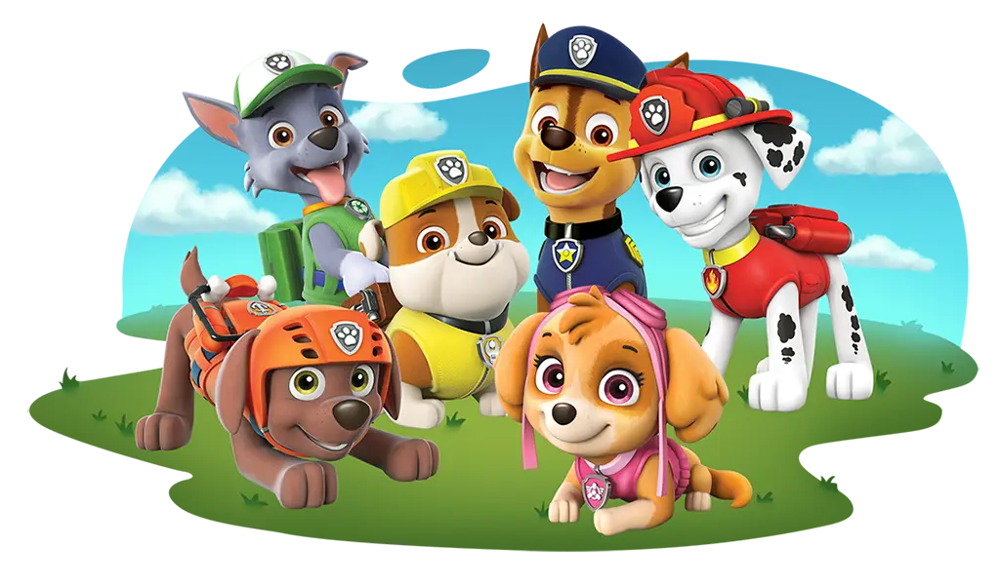
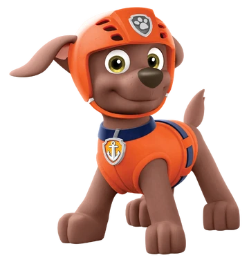
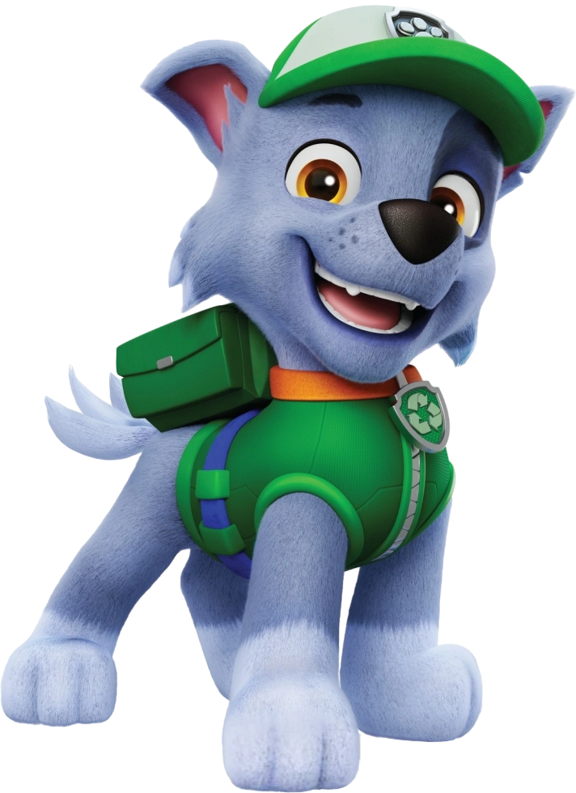
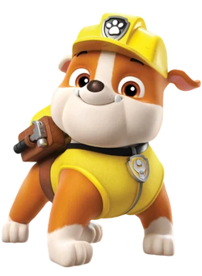
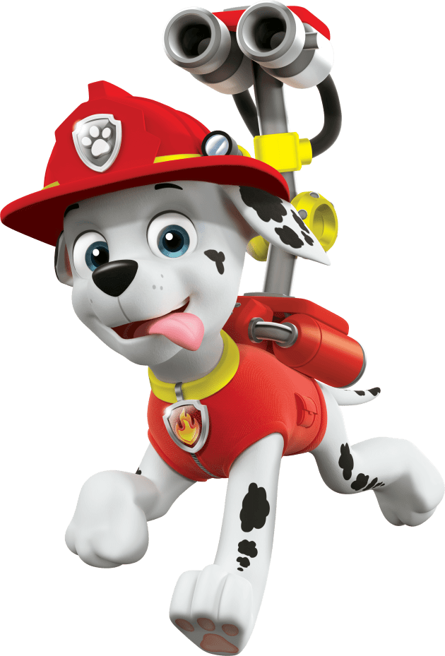

Paw Patrol (stylized 'PAW Patrol') is a Canadian CGI kids cartoon about a team of rescue dogs and their 10-year-old tech-savvy leader, Ryder, going around the town of Adventure Bay and saving its citizens! The show first aired on Nickelodeon on August 12, 2013, but has now expanded into a huge franchise, including toys, books, games, spin-offs, and movies!
The pre-school level show also includes lessons of working together, friendship, helping others, and having fun. The original team consists of 6 main pups: Chase, Zuma, Rocky, Skye, Rubble, and the ever-clumsy Marshall!
PAW Patrol is also a good show for young children because of its low-stakes adventures, ensuring that no one gets hurt, but always learns a lesson!
"No job is too big, no pup is too small!"
In PAW Patrol, each pup has a theme that relates to the services they provide, inspired by specialized first responders' equipment and jobs. This section will cover that and the pup's general personality!

"Chase is on the Case!"
Chase is often considered the leader of the group, as he is the most assertive and confident. His equipment is based around a police officers, which is also why he is a German Shepherd. Chase is often characterized as the responsible one who takes charge when needed, but is always ready to have fun.
His regular pup pack has a Megaphone, Net, Grappling Hook, Winch Hook, and a Tennis Ball Shooter, while his spy pup pack has Night Vision Goggles.
As a pup, Chase was abandoned on the cold streets of Adventure City, not too far from Adventure Bay. When in Adventure City, he is often anxious or scared, because of his bad childhood. Ryder saved him from getting hit by a truck, making Chase the first member of the Paw Patrol. According to the Paw Patrol Wiki, "Because of his past on the streets of the metropolis, Chase was very reluctant to return to Adventure City and froze up during his second mission there until Ryder was endangered."

"Let's dive in!"
Zuma is known as the relaxed surfer of the group, and he is based off of water rescue teams. In the episode 'Pups Save a Dolphin Pup,' he is shown to not only enjoy water sledding, but kite surfing and other such activities, especially when they involve water. He is always loyal and playful, very relaxed about his duty as a rescue pup. He is also mildly competitive with Skye, and they both seem to enjoy playing around.
His pup pack has a buoy and an oxygen tank for scuba diving, and his mouthpiece is shaped like a bone. Part of his scuba gear is small turbines to help him swim faster.
We do not know much about Zuma's puphood, but we know that Zuma joined the Paw Patrol in order to save people and enjoy the ocean breeze.
Zuma's description for PAW Patrol LIVE! is "Ready, set, get wet! Zuma is the water rescue pup. He's a Chocolate Labrador who absolutely LOVES the water— almost as much as he loves to laugh! Zuma is a strong swimmer, an excellent surfer and an extremely loyal friend. Zuma's philosophy? Have fun WHILE you get your work done!"

"Green means go!"
Rocky is the recycling pup, who works with junk and often repurposes it for helpful purposes. Rocky also has a 'junk collection' where he stores potential tools and materials. He is described as a 'mechanically gifted' 'Eco-puppy' who can make impressive creations out of anything lying around.
He also has aquaphobia, even if he is close friends with Zuma & Marshall, two pups who are associated with water. This means he doesn't like taking baths.
Inside of his pup pack, he holds a screwdriver, a claw, and has a large variety of other miscellaneous tools, including a glue bottle, spatula, and a coil of tape. The random items may be things he picked up and keeps in his pack in order to use them in case they are ever needed.
As a young pup, he was a mixed-breed street dog who was likely still a creative who worked with things humans threw away. Ryder says that he was a playful and active young pup.

"This pup's gotta fly!"
Skye is the youngest pup in the PAW Patrol, and the only girl. She is a flight-based search and rescue pup. She is energetic, happy, and a playful cockatoo. Skye also has a light and fun competitive nature, often teasing other pups. Skye often feels that she is a runt or feels like an outcast due to her size and feminine mannerisms, so she finds a great friend in the extended Arctic PAW Patrol member, Everest.
Her pup pack extends into jet wings. Most of her actual skill comes from her adventurous nature, and her jets help her reach tight spots. She also has a fear of eagles, most likely due to how small she is. I mildly remember her saying that she is scared of being carried away by an eagle.
According to the PAW Patrol Wiki, Skye is "Energetic and ready to help, Skye is a dependable, fearless and smart dog that patrols the skies. She loves to fly in her helicopter and with the wings in her pup pack, and has a passionate interest in all things aviation related. When excited, she has a penchant of giggle-barking and doing a backflip with grace and a smile."

"Rubble on the double!"
Rubble is an English bulldog who works in construction. He is a silly, lightheardted pup who loves to dig. He is also the youngest member of the PAW Patrol, and has arachnophobia, which was revealed in the episode 'Pups Save a Toof'. Rubble also loves small and cute animals, especially kittens. He is often used as comedic relief, including mentioning not being able to sleep and immediately falling asleep. He is also a strong believer in the supernatural, often being the first to point out the possibility of ghosts.
His pup pack contains a bark-activated construction claw and, a shovel, and a jackhammer. When he needs to move heavier objects, he uses his vehicle.
The pup is 5 years old and often tries to make himself look braver or tougher. He has a warm, loving, and open heart, and is often really playful. He can be more childish than the rest of the pups. His hobbies include snowboarding, skateboarding, DJ-ing, and warm bubble baths.
Before he joined the PAW Patrol, Rubble was a stray dog. In 'Pups get a Rubble' he met the PAW Patrol when Chase and Marshall were playing soccer, and Marshall kicked the ball too hard. Rubble found this ball, and started playing with it on the side of a cliff, until it fell onto a cliffside tree, where he tries to recover it and help out, before getting stuck himself.
Chase and Marshall helped out and saved him, while Rubble learned more about the PAW Patrol, becoming interested in joining.

"I'm all fired up!"
Marshall is a fan-favorite dalmatian fire pup who tends to be clumsy and silly. He is also seen as having low self-esteem due to his clumsiness, as seen in 'Pups Save a Friend'
According to the PAW Patrol Wiki, "He can feel insecure on occasion, fearing that he may mess things up. In "Pups Save a Friend", he felt ashamed after unintentionally making Mr. Porter spill his produce and causing Mayor Goodway and Chickaletta to crash their scooter. He then thought that he was ruining his friends' fun with his clumsiness and temporarily took a break from the PAW Patrol. They later reassured him that that's not the case, and he was quite relieved, proving that he cares about them and is sensitive to their opinions. In spite of his insecurities, though, he always pulls through in the end, showing his determination."
Marshall also loves to have fun and enjoys playing around a lot. He is often seen trying to play volleyball or soccer.
In his pup pack, he has a water cannon, a net, and on the side is where the water stored, in two tanks.
Marshall also showcases medical ability, as firefighters often help out with injuries. He has a separate suit specifically for medical emergencies. Inside of this specialized pup pack, he has an X-Ray machine, a thermometer, and other ailments, such as bandages or crutches.